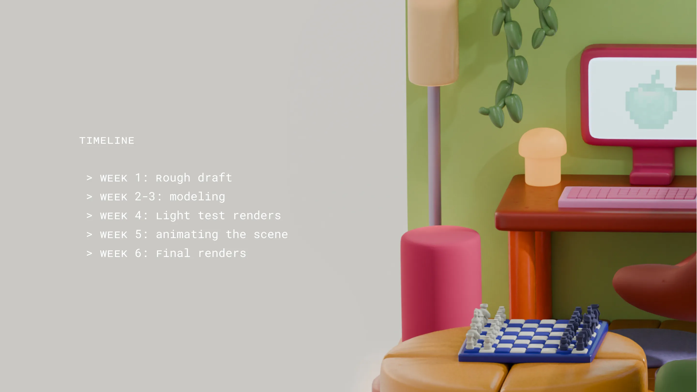
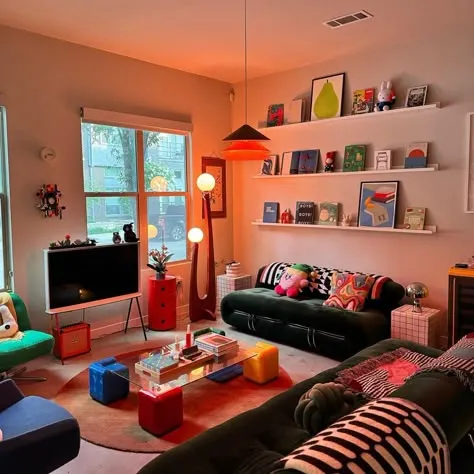
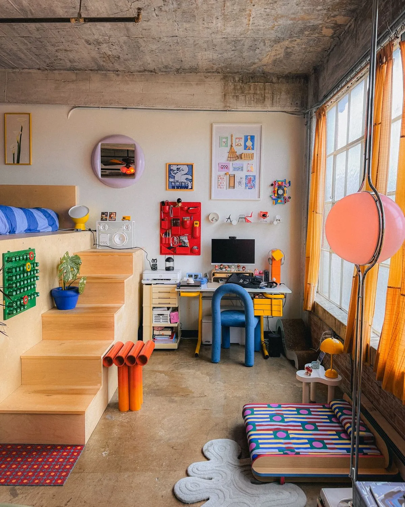
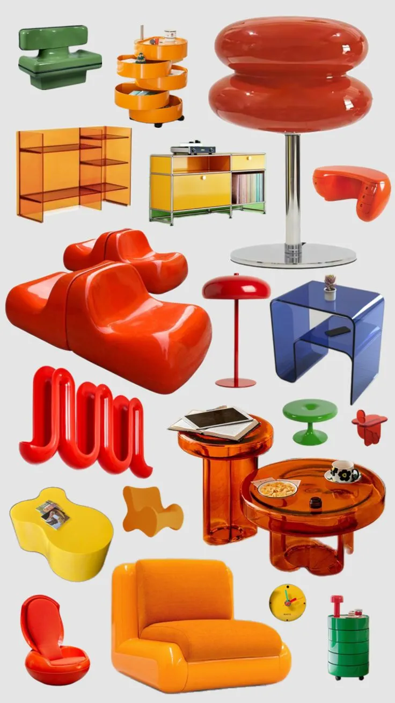
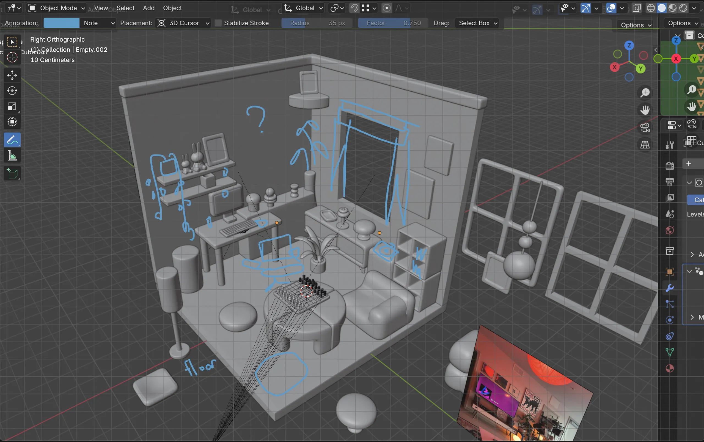
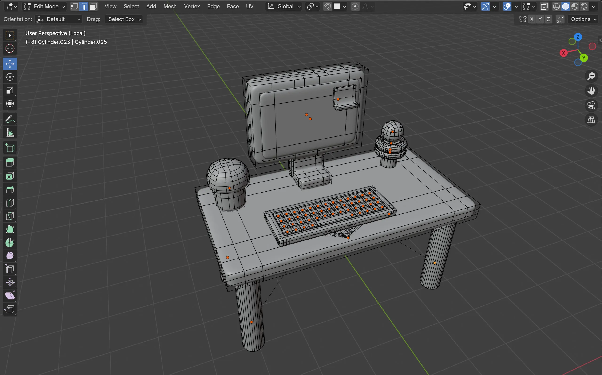
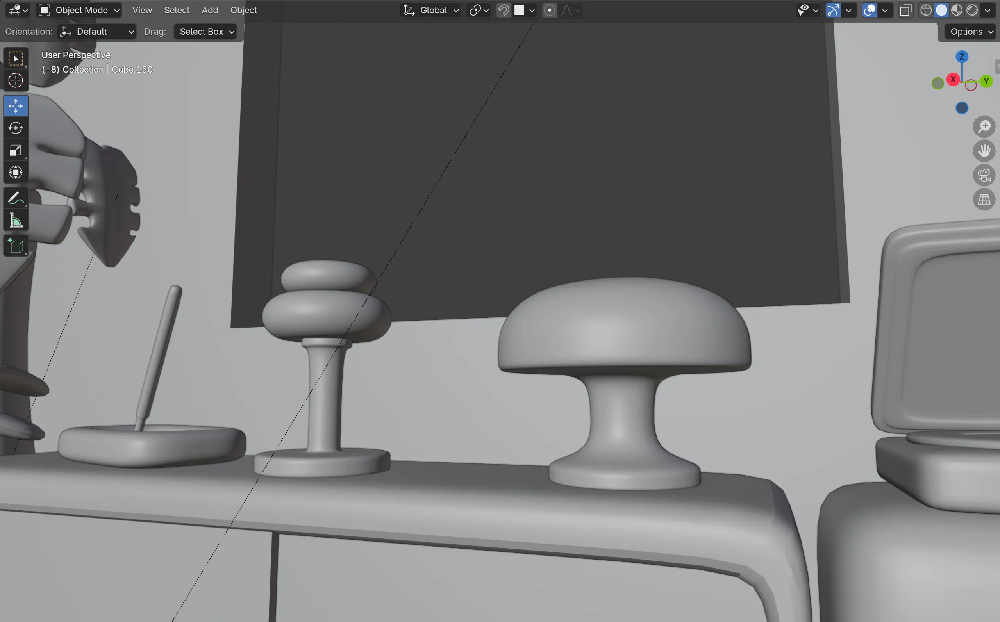
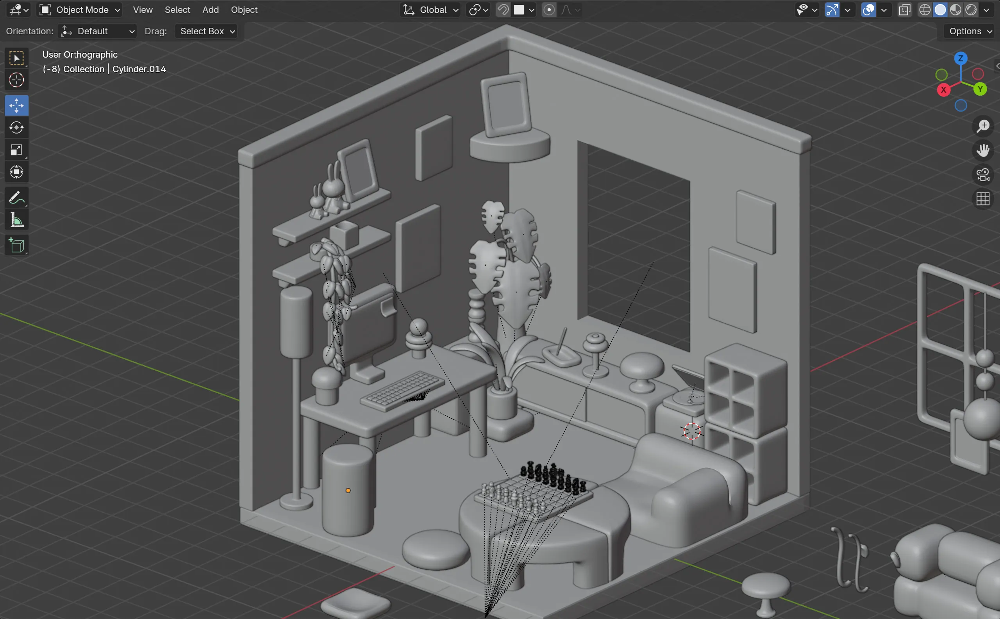
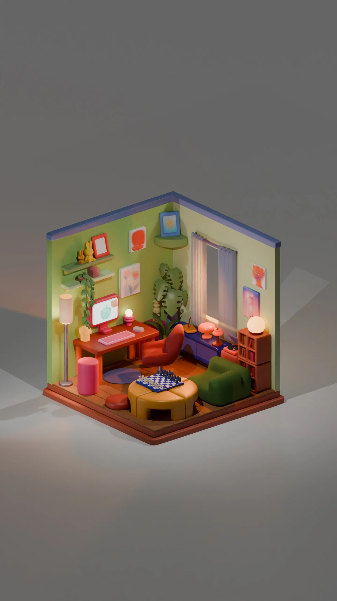

Home Sweet Home
3D Animation, 3D Modeling, Blender
Baltimore MD, 2026
Blender Workshop class, MICA
About
Home sweet home.
A 48-second environment animation made in Blender. I’m a huge fan of mid-century maximalist interiors with jolly colors. In this project, my objective was to create a polished isometric room design. I focused on creating an appealing color palette, animating the scene, and matching to the sound design.
The goal
I had done a similar project before where I did a realistic render of an existing interior. This time I set myself a goal for myself to shift from life-like renders to smooth isometric design style.

How I made it happen:
Week 1: Rough draft and collecting references
I drew a very approximate sketch for object placement and mapped out how many and what objects I need to model.




Week 2-3: Modeling individual items
Next step was modeling all objects except for Miffy lamps and chess pieces. I started with objects that take up more space and them fill up the interior with misc decorations.




Week 4: Light test renders
I set up lights in the scene. All objects have one texture I planned to use for this toy-like style but with no colors yet. I manipulated lights and shadows without having color distractions.


Week 5: Animating the scene
I set up lights in the scene. All objects have one texture I planned to use for this toy-like style but with no colors yet. I manipulated lights and shadows without having color distractions.
Week 6: Final renders
After applying color to objects, I rendered images for both a daytime and a nighttime version of the room. The final animation is rendered in night lighting.




Details